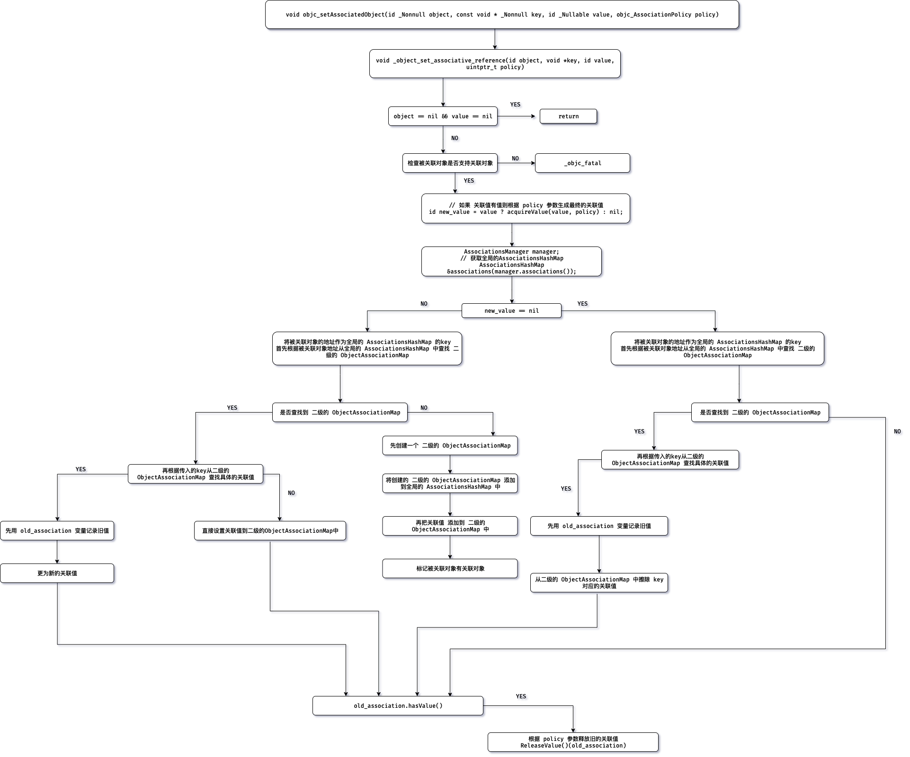

Objective C 关联对象原理
如何使用?
-
首先需要导入
<objc/runtime.h>头文件 -
然后通过
runtime如下API// 为 object 设置关联值 OBJC_EXPORT void objc_setAssociatedObject(id _Nonnull object, const void * _Nonnull key, id _Nullable value, objc_AssociationPolicy policy) OBJC_AVAILABLE(10.6, 3.1, 9.0, 1.0, 2.0); // 获取 object 关联值 OBJC_EXPORT id _Nullable objc_getAssociatedObject(id _Nonnull object, const void * _Nonnull key) OBJC_AVAILABLE(10.6, 3.1, 9.0, 1.0, 2.0); // 移除 object 所有关联值 OBJC_EXPORT void objc_removeAssociatedObjects(id _Nonnull object) OBJC_AVAILABLE(10.6, 3.1, 9.0, 1.0, 2.0); -
示例代码一
#import <Foundation/Foundation.h> #import <objc/runtime.h> @interface CustomObject : NSObject @end @implementation CustomObject @end int main(int argc, const char *argv[]) { CustomObject *obj = [[CustomObject alloc] init]; const char *key = "name"; NSString *value = @"0x1306a94"; objc_setAssociatedObject(obj, key, value, OBJC_ASSOCIATION_COPY_NONATOMIC); NSLog(@"name is: %@", objc_getAssociatedObject(obj, key)); // name is: 0x1306a94 return 0; } -
示例代码二, 为
category实现property#import <Foundation/Foundation.h> #import <objc/runtime.h> @interface CustomObject : NSObject @end @implementation CustomObject @end @interface CustomObject (Ext) @property (nonatomic, copy) NSString *name; @end @implementation CustomObject (Ext) static void *key = &key; // key 写法 - (void)setName:(NSString *)name { // objc_setAssociatedObject(self, key, name, OBJC_ASSOCIATION_COPY_NONATOMIC); // 写法二,使用 getter selector, 推荐写法 objc_setAssociatedObject(self, @selector(name), name, OBJC_ASSOCIATION_COPY_NONATOMIC); } - (NSString *)name { // return objc_getAssociatedObject(self, key); // _cmd 为每个方法的第二个隐式参数, 推荐写法 return objc_getAssociatedObject(self, _cmd); } @end int main(int argc, const char *argv[]) { CustomObject *obj = [[CustomObject alloc] init]; obj.name = @"0x1306a94"; NSLog(@"name is: %@", obj.name); // name is: 0x1306a94 return 0; }
源码窥探实现原理
本文基于 objc4-756.2.tar.gz 源码分析, 具体源码文件为 objc-references.mm
-
首先是
objc_setAssociatedObject的原理objc_setAssociatedObject实际内部是调用的_object_set_associative_referencevoid _object_set_associative_reference(id object, void *key, id value, uintptr_t policy) { // This code used to work when nil was passed for object and key. Some code // probably relies on that to not crash. Check and handle it explicitly. // rdar://problem/44094390 // 如果被关联的对象和关联的值都没有,则什么也不做 if (!object && !value) return; assert(object); // 检查被关联对象是否支持关联对象 if (object->getIsa()->forbidsAssociatedObjects()) _objc_fatal("objc_setAssociatedObject called on instance (%p) of class %s which does not allow associated objects", object, object_getClassName(object)); // retain the new value (if any) outside the lock. // 用于记录旧的关联值 ObjcAssociation old_association(0, nil); // 如果 关联值有值则根据 policy 参数生成最终的关联值 id new_value = value ? acquireValue(value, policy) : nil; { AssociationsManager manager; // 获取全局的AssociationsHashMap AssociationsHashMap &associations(manager.associations()); // 将被关联对象的地址作为全局的 AssociationsHashMap 的key disguised_ptr_t disguised_object = DISGUISE(object); if (new_value) { // 如果关联值 有值 // break any existing association. // 首先根据被关联对象地址从全局的 AssociationsHashMap 中查找 二级的 ObjectAssociationMap AssociationsHashMap::iterator i = associations.find(disguised_object); if (i != associations.end()) { // secondary table exists // 如果找到了 二级的 ObjectAssociationMap ObjectAssociationMap *refs = i->second; // 则再根据传入的key从二级的 ObjectAssociationMap 查找具体的关联值 ObjectAssociationMap::iterator j = refs->find(key); if (j != refs->end()) { // 如果找到 // 先记录旧的关联值 old_association = j->second; // 然后再直接更新 关联值为新值 j->second = ObjcAssociation(policy, new_value); } else { // 没有被设置过关联值,则直接设置关联值 (*refs)[key] = ObjcAssociation(policy, new_value); } } else { // create the new association (first time). // 如果没有找到 二级的 ObjectAssociationMap // 则先创建一个 二级的 ObjectAssociationMap ObjectAssociationMap *refs = new ObjectAssociationMap; // 将创建的 二级的 ObjectAssociationMap 添加到全局的 AssociationsHashMap 中 associations[disguised_object] = refs; // 再把关联值 添加到 二级的 ObjectAssociationMap 中 (*refs)[key] = ObjcAssociation(policy, new_value); // 标记被关联对象有关联对象 object->setHasAssociatedObjects(); } } else { // 如果关联值为空 // setting the association to nil breaks the association. // 首先根据被关联对象地址从全局的 AssociationsHashMap 中查找 二级的 ObjectAssociationMap AssociationsHashMap::iterator i = associations.find(disguised_object); if (i != associations.end()) { ObjectAssociationMap *refs = i->second; // 如果找到了 二级的 ObjectAssociationMap // 则再根据传入的key从二级的 ObjectAssociationMap 查找具体的关联值 ObjectAssociationMap::iterator j = refs->find(key); if (j != refs->end()) { // 记录旧的关联值 old_association = j->second; // 从二级的 ObjectAssociationMap 中擦除 key 对应的关联值 refs->erase(j); } } } } // release the old value (outside of the lock). // 如果旧的关联值有值, 则根据 policy 参数释放旧的关联值 if (old_association.hasValue()) ReleaseValue()(old_association); } -
设置关联值流程图

-
objc_getAssociatedObject原理objc_getAssociatedObject实际内部是调用的_object_get_associative_referenceid _object_get_associative_reference(id object, void *key) { id value = nil; uintptr_t policy = OBJC_ASSOCIATION_ASSIGN; { AssociationsManager manager; // 获取全局的AssociationsHashMap AssociationsHashMap &associations(manager.associations()); // 将被关联对象的地址作为全局的 AssociationsHashMap 的key disguised_ptr_t disguised_object = DISGUISE(object); // 根据被关联对象地址从全局的 AssociationsHashMap 中查找 二级的 ObjectAssociationMap AssociationsHashMap::iterator i = associations.find(disguised_object); if (i != associations.end()) { // 如果找到了 二级的 ObjectAssociationMap ObjectAssociationMap *refs = i->second; // 则再根据传入的key从二级的 ObjectAssociationMap 查找具体的关联值 ObjectAssociationMap::iterator j = refs->find(key); if (j != refs->end()) { // 拿到最终的关联值 ObjcAssociation &entry = j->second; value = entry.value(); policy = entry.policy(); // 根据 policy 值,判断是否需要进行 retain if (policy & OBJC_ASSOCIATION_GETTER_RETAIN) { objc_retain(value); } } } } // 检查是否需要进行 autorelease if (value && (policy & OBJC_ASSOCIATION_GETTER_AUTORELEASE)) { objc_autorelease(value); } // 返回查找到的 关联值 return value; } -
objc_removeAssociatedObjects原理objc_removeAssociatedObjects首先会检查被关联对象是否有值, 是否被标记过有关联对象void objc_removeAssociatedObjects(id object) { if (object && object->hasAssociatedObjects()) { _object_remove_assocations(object); } }void _object_remove_assocations(id object) { // 记录所有的关联值 vector< ObjcAssociation,ObjcAllocator<ObjcAssociation> > elements; { AssociationsManager manager; // 首先拿到全局的 AssociationsHashMap AssociationsHashMap &associations(manager.associations()); // 如果全局的 AssociationsHashMap 中没有元素 则什么也不做 if (associations.size() == 0) return; // 将被关联对象的地址作为全局的 AssociationsHashMap 的key disguised_ptr_t disguised_object = DISGUISE(object); // 根据被关联对象地址从全局的 AssociationsHashMap 中查找 二级的 ObjectAssociationMap AssociationsHashMap::iterator i = associations.find(disguised_object); if (i != associations.end()) { // copy all of the associations that need to be removed. ObjectAssociationMap *refs = i->second; for (ObjectAssociationMap::iterator j = refs->begin(), end = refs->end(); j != end; ++j) { // 将二级的 ObjectAssociationMap 中的每一个元素,保存到 elements 中 elements.push_back(j->second); } // remove the secondary table. // 释放二级的 ObjectAssociationMap 内存 delete refs; // 从全局的 AssociationsHashMap 中移除这个 二级的 ObjectAssociationMap associations.erase(i); } } // the calls to releaseValue() happen outside of the lock. // 释放从二级的 ObjectAssociationMap 中查找到的 所有关联值 for_each(elements.begin(), elements.end(), ReleaseValue()); }
总结:
- 实现关联对象的核心由
AssociationsManagerAssociationsHashMapObjectAssociationMapObjcAssociation组成 关联值并不是存储在被关联对象本身内存中- 关联对象存储在全局的统一的一个
AssociationsManager中 - 设置关联对象为
nil就相当于是移除关联值